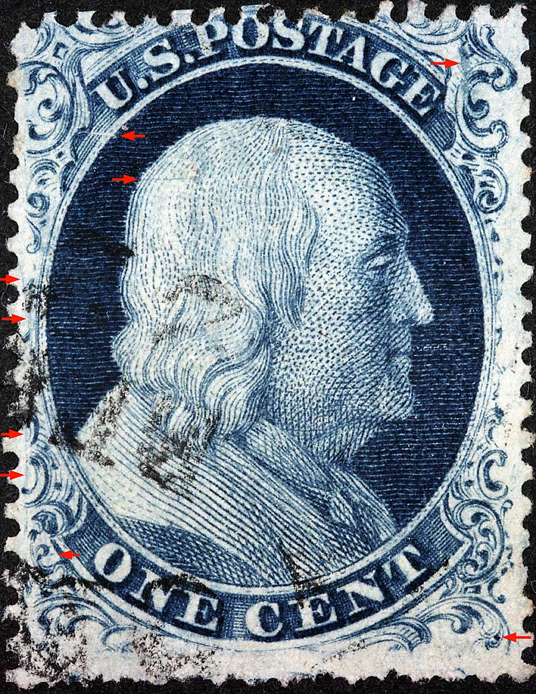
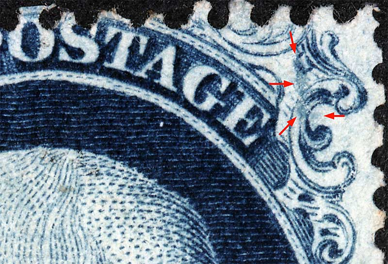
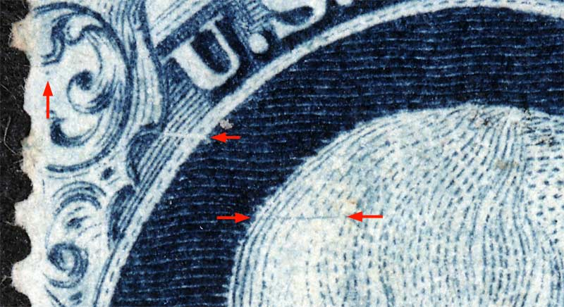
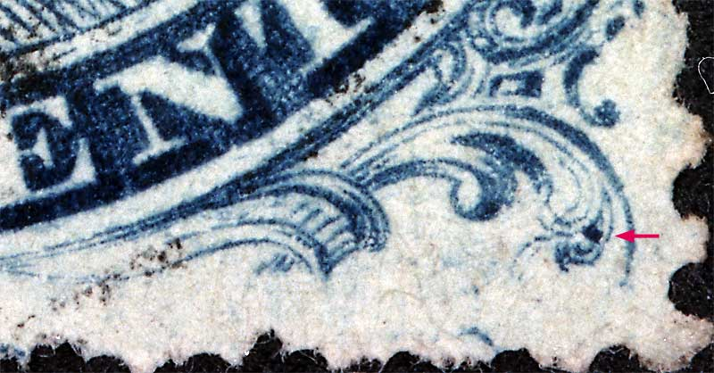
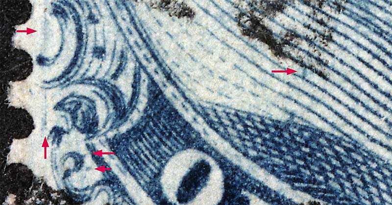

1¢ Franklin Issue of 1851-1857, PLATE 4 Position 52R4 |
Type IIIa, Relief F Issued both imperforate (Scott 8A) and perforate (Scott 22). The red arrow under the U of U.S. indicates the small "F" Relief flaw. The Ashbrook/Neinken diagrams show this flaw exaggerated. A shoulder dot is found on nearly all "F" Reliefs from this plate except (according to the Neinken diagrams) Positions 54, 58, 59, 60, 99 and 100R4. See 52L4 for a detailed image of the shoulder dot. |
Figure 1. (BELOW) Image below courtesy of Tim Smith |
|  |
Figure 2. (BELOW) A large deep blur of color in the upper right ornaments, as illustrated in the Neinken plating diagram. |
|  |
Figure 3. (BELOW) Horizontal plate scratch at the back of Franklin's head, as illustrated in the Neinken plating diagram. "F" relief flaw below the U of U.S. Also a strong dot of color below Ornament A can be seen which is not shown in the plating diagram. |
|  |
Figure 4. (BELOW) GUIDE DOT location in lower right plume.  |
| Figure 5. (BELOW) Detail of the lower left quadrant. Plating marks inside Ornament H and the shoulder dot as illustrated in the Neinken plating diagram. A blurry vertical scribe line is visible as well but is not know if consistant at this time.
 |
| DISCLAIMER and COPYRIGHT INFORMATION: Thanks for visiting this site. I hope you learn something new as we are making new discoveries all the time. You, the visitor, have my permission to link to my pages and to share the INFORMATION with others. The images themselves fall under the fair use guidelines established by the United States Congress and Copyright law. Basically contact us before using. I also ask in return that you send me an e-mail if I have made a mistake, or have made some other technical blunder that in my rush to put these pages up would cause the visitor confusion. Please also visit my other website at www.slingshotvenus.com. and support the live music arts. While your there, be sure to purchase our music. There are not many philatelic rock stars around and we need all the help we can get. :-) I can be reached at: nerdman@ix.netcom.com REVISED 12.18.15 |